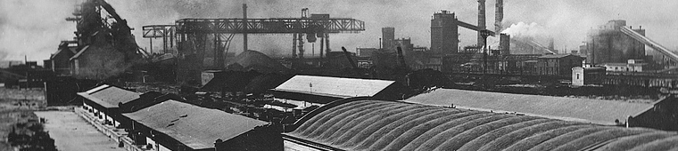

2011 წელს შეიქმნა შპს რუსთავის ფოლადი, რომელმაც შეიძინა რუსთავის მეტალურგიული ქარხნის აქტივები. რუსთავის მეტალურგიული ქარხანა, რომელიც ერთ–ერთი ყველაზე მსხვილი მეტალურგიული წარმოებაა მთელს კავკასიაში, მდებარეობს საქართველოს დედაქალაქის, თბილისის სამხრეთითა და მისგან 30 კილომეტრის დაშორებით. რუსთავის მეტალურგიული ქარხანა 1948 წელს დაარსდა და ამიერკავკასიაში სრული მეტალურგიული ციკლის პირველი საწარმო იყო, რომელიც ამზადებდა ფოლადს, ცხლადნაგლინ უნაკერო მილებს, თუჯის, ალუმინისა და რკინის სხვადასხვა კონსტრუქციებს. ქარხანა აწარმოებდა უნაკერო მილებს ყაზახეთის, აზერბაიჯანის, თურქმენეთისა და ახლო აღმოსავლეთის ნავთობის საბადოების მოთხოვნების დასაკმაყოფილებლად. დღეს, რუსთავის მეტალურგიული ქარხნის ახალი მენეჯმენტისა და მფლობელების მიზანია ინვესტიციებისა და რესტრუქტურიზაციის მთავარი პროგრამის ფარგლებში აღადგინოს ქარხანა და განავითაროს საქმიანობა რეგიონალურ და ახალ გლობალურ ბაზრებზე. ქარხანა დღეს წარმატებით ფუნქციონირებს და მრავალი სახეობის პროდუქციას აწარმოებს, რომელთა შორისაა: არმატურა, უნაკერო მილები, კვადრატული ნამზადი, თუჯის სხმულები, ლითონკონსტრუქციები, მექანიკური დეტალები, ფასონური სხმულები, გრანულირებული წიდა, სილიკომანგანუმი, კირი და კირქვა. იმისათვის, რომ რუსთავის მეტალურგიულმა ქარხანამ გაიმყაროს პოზიციები ბაზარზე, პირველადი ამოცანაა წარმოების მოცულობის გაზრდა. ამ მიზნით, ახალი მენეჯმენტი თანმიმდევრულად ახორციელებს ქარხნის სისტემატურ განახლებასა და გადაიარაღებას, ნერგავს ახალ ტექნოლოგიებს. ქარხნისთვის ერთ-ერთი მთავარი პრიორიტეტია გამოცდილი კადრების ხელშეწყობით ახალგაზრდა კადრების მომზადება. დღეს რუსთავის მეტალურგიული ქარხანა ახორციელებს ექსპორტს ევროკავშირის ქვეყნების, აშშ-ს, რუსეთის და ახლო აღმოსავლეთის ბაზრებზე, ასევე მეზობელ სომხეთში, აზერბაიჯანსა და თურქეთში. შპს რუსთავის ფოლადში დასაქმებულია 1,300-ზე მეტი ადამიანი.
ისტორია და ტრადიციები

- 1940 წელს საბჭოთა კავშირის ხელმძღვანელობამ მიიღო რუსთავის მეტალურგიული ქარხნის მშენებლობის გადაწყვეტილება ქ. რუსთავში. ეს განპირობებული იყო რეგიონში ძირითადი ნედლეულის რესურსების არსებობით და კასპიის ნავთობის საბადოებთან სიახლოვით. დაიწყო ქარხნის მშენებლობის წინასწარი სამუშაოები, მაგრამ მეორე მსოფლიო ომის გამო შეჩერდა.
- 1944 წლის 23 მარტს ქარხნის მშენებლობა განახლდა ამიერკავკასიის რკინიგზის სადგურ "რუსთავის" მიმდებარე ტერიტორიაზე.
- 1946 წელს ამუშავდა პირველი დამხმარე საამქროები: თბოელექტროცენტრალი, მექანიკურ-შემკეთებელი საამქრო, ფასონური სხმულების საამქრო, ლითონკონსტრუქციების საამქრო და სხვა.
- 1948 წელი ქარხნის დაარსების ოფიციალურ თარიღად მიიჩნევა.
- 1950 წლის 27 აპრილს მარტენული ქართული ფოლადის პირველი 150 ტონა ნადნობი იქნა დამზადებული ქარხანაში.
- 1952 წლის სექტემბერში ქარხნის მილსაგლინავ საამქროში, “დგან 140-ზე" პირველი ცხლადნაგლინი უნაკერო მილი დამზადდა.
- 1953 წლის დეკემბერში, ქარხნის მილსაგლინავ საამქროში, მწყობრში ჩადგა “დგანი 400”, რომელიც იმ დროისათვის უნაკერო მილების ერთ-ერთი უმსხვილესი დგანი იყო მთელს ევროპაში.
- 1954 წლის ივლისში, ბრძმედის საამქროში, პირველი ქართული თუჯი იქნა გამოდნობილი.
- 1954 წელს ქარხანაში მიიღეს პირველი ქართული კოქსი.
- 1955 წელს ამუშავდა ფურცლოვანი და სორტული ნაგლინის საამქროები.
- 1961 წელს ამოქმედდა ცივად ადიდვის საამქრო.
- 1962 წელს მილსაგლინავ საამქროში დასრულდა დგანი “400-ის" მთლიანი ავტომატიზაცია.
- 1967 წელს პირველი უწყვეტი ჩამოსხმის დანადგარის მეშვეობით ჩამოასხეს სხმულ-სლიაბი.
- 1961-1991 წლებში საწარმოში სისტემატურად ხორციელდებოდა ძირითადი დანადგარების განახლების,საწარმოო სიმძლავრეების გაზრდისა და პროდუქციის ხარისხის გაუმჯობესებისათვის საჭირო ღონისძიებები:
- 1975-1980 წლებში ძირეულად განახლდა მარტენის ღუმელები და მათი მოცულობა 150 ტონიდან 200 ტონამდე გაიზარდა.
- 1980 წელს ბრძმედის რეკონსტრუქციის შედეგად მისი მოცულობა 750 მ3 -დან 1093 მ3-მდე გაიზარდა.
- 1982 წელს ამუშავდა ახალი აგროფაბრიკა.
- 1944-1999 წლებში რუსთავის მეტალურგიულმა ქარხანამ 50 მლნ. ტონამდე ფოლადი და 36 მლნ. ტონაზე მეტი მზა ნაგლინი გამოუშვა, რაც მილების, სამშენებლო არმატურის, ფურცლებისა და სხვა პროდუქციის სახით დამზადდა.
- 1999 წელს რუსთავის მეტალურგიული ქარხანა ფაქტიურად სრულად გაჩერდა.
- 2006 წელს რუსთავის მეტალურგიული ქარხნის აქციების სრული პაკეტი შეიძინა ერთ-ერთმა ინგლისურ-ქართულმა კერძო კომპანიამ და მას შემდეგ დაიწყო ქარხნის რეაბილიტაციის რთული პროცესი.
- 2009 წელს ქარხნის ფოლადსადნობ საამქროში დამონტაჟდა ინდუქციური ღუმელები, აგრეთვე გარემონტდა სორტული გლინვის საამქრო და დაიწყო არმატურის წარმოების პროცესი.
- 2011 წელს წარმოების მრავალწლიანი გაჩერების შემდეგ, განახლდა წარმოების პროცესი ქარხნის მილსაგლინავ საამქროში, კერძოდ კი „დგან 400“-ზე წარმატებით განხორციელდება სხვადასხვა დიამეტრის უნაკერო მილების წარმოება ერთ-ერთი მსხვილი საერთაშორისო კომპანიის დაკვეთით.
- 2011 წელს ქარხნის მფლობელებმა და ახალმა მენეჯმენტმა დაუბრუნეს ქარხანას ძველი, ისტორიული სახელი. იმისათვის რომ რუსთავის მეტალურგიულმა ქარხანამ დაიბრუნოს ძველი მასშტაბები და გაიმყაროს პოზიციები ქვეყნის ინდუსტრიულ საზოგადოებაში, უპირველესი ამოცანაა წარმოების მოცულობის ზრდა. ამ მიზნით, დღეს ქარხნის მენეჯმენტი თანმიმდევრულად ახორციელებს ქარხნის სისტემურ განახლებას, გადაიარაღებას, ნერგავს ახალ ტექნოლოგიებს და გამოცდილი კადრების ხელშეწყობით ამზადებს ახალგაზრდა კადრებს.
ფაქტები და მონაცემები
რუსთავის მეტალურგიული ქარხანა თავისი არსებობის მანძილზე მიღწეული მაქსიმალური მწარმოებლურობის დროს წელიწადში აწარმოებდა შემდეგი რაოდენობის პროდუქციას:
- 620 000 ტ. კოქსს
- 1 200 000 ტ. აგლომერატს
- 1 450 000 ტ. ფოლადს
- 700 000 ტ. თუჯს
- 500 000 ტ. უნაკერო მილებს
- 130 000 ტ. ფურცლოვან ნაგლინს
- 130 000 ტ. სორტულ ნაგლინს
- 1 200 000 ტ. მილნამზადს
რუსთავის მეტალურგიული ქარხნის ძირითადი სიმძლავრეები იყო:
- აგლოფაბრიკა ნომინალური წლიური მწარმოებლურობით 2.2 მლნ. ტონა.
- ბრძმედის ღუმელი ნომინალური წლიური მწარმოებლურობით 0.725 მლნ. ტონა.
- 2 საკოქსე ბატარეა ნომინალური წლიური მწარმოებლურობით 0.35 მლნ. ტონა.
- 8 ცალი , თითოეული 200 ტონიანი, მარტენის ღუმელი ნომინალური წლიური მწარმოებლურობით 1.5 მლნ. ტონა.
- დგანი "1000" (ბლუმინგი) ნომინალური წლიური მწარმოებლურობით 1.5 მლნ. ტონა.
- "900/750" ნამზადის დგანი ნომინალური წლიური მწარმოებლურობით 1.0 მლნ. ტონა.
- უნაკერო მილების დგანი "140" ნომინალური წლიური მწარმოებლურობით 120 ათასი ტონა წელიწადში.
- უნაკერო მილების დგანი "400" ნომინალური წლიური მწარმოებლურობით 350 ათასი ტონა წელიწადში
- ცივად ადიდვის მილების საამქრო წლიური მწარმოებლურობით 50 ათასი ტონა.
- არმატურის „დგანი 320“ ნომინალური მწარმოებლურობით 160 ათასი ტონა წელიწადში.